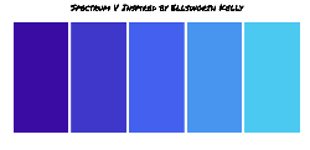

In this lesson we learned about the different distributions of Linux. I tried out different distributions on virtual machines aka "computers". I used a flashdrive to download my distribution, load it into one of the computers with Virtual Box, and I tried it out to see what it could do. Mine had games and a different background when I tried it out.
I created this Spectrum V replica of the one made by Ellsworth Kelly. I created it using what I learned in box models and tables. I aligned and spaced out the colors I chose from a color palette in coolors, so they would portray the original Spectrum V color palette.